Operating Systems, Final Project
SchedLab simulates a single CPU core running a set of processes under two non-preemptive policies: first-come, first-served (FCFS) and shortest job first (SJF). The user enters a process ID, an arrival time, a burst time and a priority for each process, picks an algorithm and presses Run. The program draws a Gantt chart, fills a results table with start, completion, waiting, turnaround and response times, and shows the average waiting time, the average turnaround time and the makespan. All times are integer simulation ticks. They are not measured CPU time.
The scheduling code is written once, in portable C++20 under core/. The same code is used in two ways. The native build produces a console program, schedlab-cli, and the unit tests. Emscripten compiles it to WebAssembly for the browser. A React interface collects the input and draws what the core returns. The interface contains no scheduling code of its own: it calls the core through a small TypeScript interface, SchedulerAdapter.
web/src)schedlab.mjs, built from wasm_bindings.cppcore/src)The browser really runs the same C++ code as the native tests, and a test checks it. web/tests/parity.test.ts sends every fixture in core/tests/cli, plus generated workloads, through both the native schedlab-cli and the WebAssembly text entry point, and requires identical output and exit codes. The test fails, not skips, when the native executable has not been built.
Every run goes through one function. shows it. It validates the input, trims the IDs, asks the chosen algorithm only for when each process runs (a list of segments), and then derives every per-process number and the averages from those segments in metrics.cpp. Both algorithms therefore share one set of formulas.
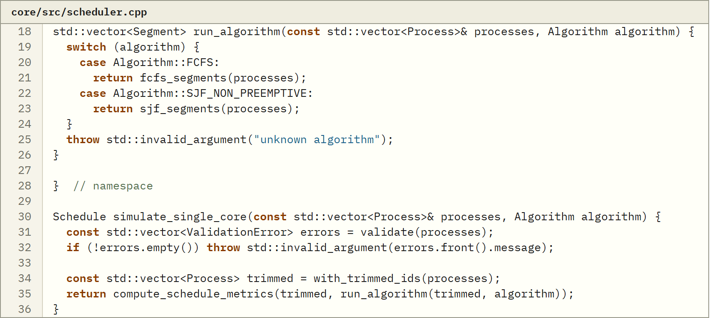
core/src/scheduler.cpp, lines 18 to 36: run_algorithm picks FCFS or SJF, simulate_single_core validates, trims and computes metrics.Prerequisites are Node.js with npm, CMake 3.20 or later and a C++20 compiler. The commands below are from the project README.md and are run in PowerShell from the repository root.
cmake -S core -B build/core cmake --build build/core --config Release Set-Location web npm ci npm run dev # open the local URL that Vite prints # production build served locally npm run build npm run preview -- --host 127.0.0.1 --port 4173 --strictPort # console program (after the cmake build above) build\core\Release\schedlab-cli.exe <fcfs|sjf> < input.txt
The built app, its fonts, the example workloads and the WebAssembly module are all served locally. No network access is needed once the dependencies are installed.
| Field | Meaning | Accepted values in the editor |
|---|---|---|
| PID | Process name shown on the chart | Nonempty after trimming spaces, unique (case-sensitive), not IDLE in any letter case |
| Arrival | Tick at which the process is ready | Whole number, 0 to 1,000,000 |
| Burst | Ticks of CPU time needed | Whole number, 1 to 1,000,000 |
| Priority | Recorded and shown in the results | Whole number, -1000 to 1000 |
Priority is accepted and kept, but neither FCFS nor SJF uses it to choose a process. The assignment asks for these two algorithms only, and the interface says so next to the table. A test in each algorithm's suite (priority_does_not_change_the_order) confirms that changing priorities leaves the schedule unchanged.
A schedule contains 1 to 100 processes. The program rejects a missing, negative, fractional or overflowing number with a message that names the field and the value. It never turns an invalid value into a zero. The check happens in two places. The editor checks number format and ranges before it calls the core. The core checks everything again, including the rules that need the whole table: at least one and at most 100 processes, nonempty and unique IDs, no IDLE, and a check that the largest arrival plus the sum of all bursts fits in a 64-bit integer. The core returns every error it finds, not only the first. The editor does not copy the ID and count rules: it shows the core's messages next to the matching field.
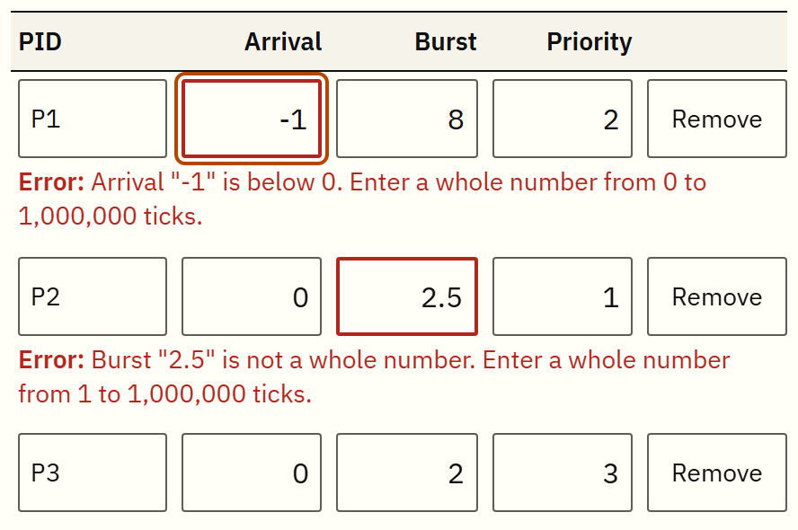
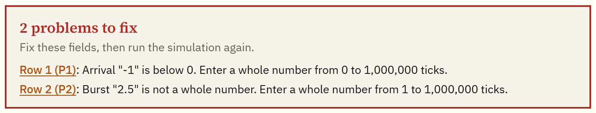
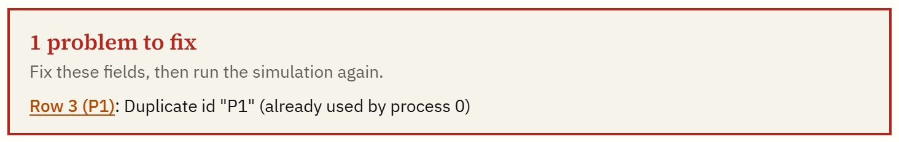
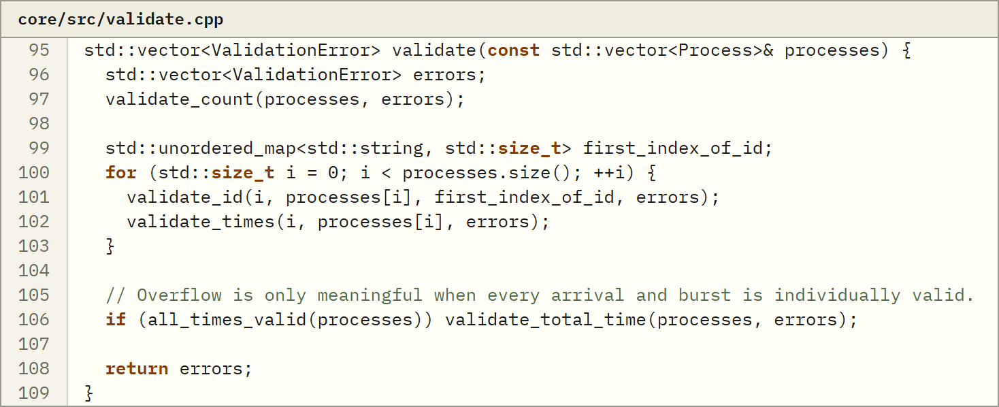
core/src/validate.cpp, lines 95 to 109: validate collects every error before returning.Rule. The CPU runs processes in the order they arrive. If two processes arrive at the same tick, the one listed first in the table runs first. Each process runs to completion. If the next process has not arrived when the CPU becomes free, the CPU idles until it does.
How the code does it. indices_by_arrival () builds a list of process positions and sorts it with std::stable_sort on arrival only. A stable sort keeps the input order for equal arrivals, which is exactly the tie-break. fcfs_segments () then visits the processes in that order with a clock now. If process.arrival > now it records an idle segment and moves the clock forward. It then records the process's run segment and advances the clock by the burst.
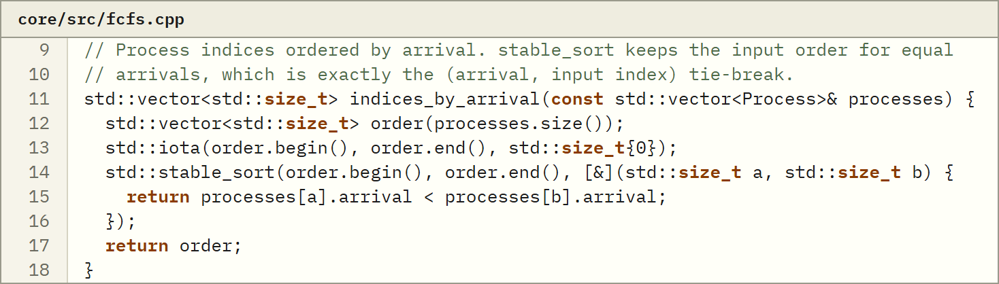
core/src/fcfs.cpp, lines 9 to 18: indices_by_arrival orders by arrival and keeps input order for ties.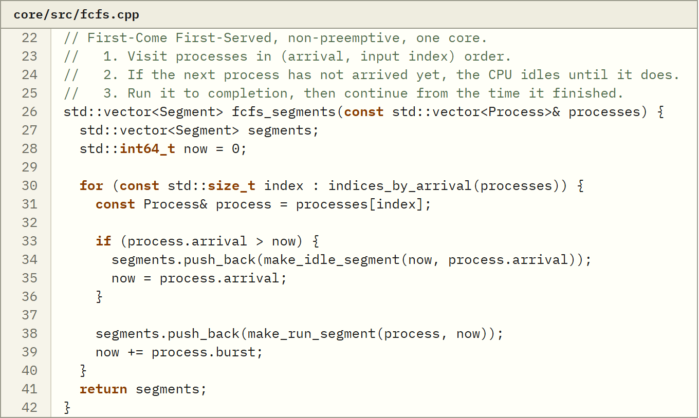
core/src/fcfs.cpp, lines 22 to 42: fcfs_segments, the FCFS algorithm.Walk-through with T1. T1 has three processes that all arrive at tick 0: P1 (burst 8), P2 (burst 4) and P3 (burst 2), listed in that order. The arrivals are equal, so the stable sort leaves the order P1, P2, P3.
| Pass | now before | Next in order | arrival > now? | Segment recorded | now after |
|---|---|---|---|---|---|
| 1 | 0 | P1 (arrival 0, burst 8) | no | P1 [0, 8) | 8 |
| 2 | 8 | P2 (arrival 0, burst 4) | no | P2 [8, 12) | 12 |
| 3 | 12 | P3 (arrival 0, burst 2) | no | P3 [12, 14) | 14 |
Segments are half-open: [8, 12) means the process runs during ticks 8 to 11 and finishes at tick 12. The metrics follow from the segments: P1 waits 0, P2 waits 8 and P3 waits 12, so the average waiting time is 20 / 3 = 6.67 ticks. Turnaround times are 8, 12 and 14, which gives 34 / 3 = 11.33 ticks. The application output for T1 is in .
Idle time. With P1 (arrival 0, burst 1) and P2 (arrival 4, burst 2), the clock is 1 when P2 is next. Since 4 > 1, the code records an idle segment [1, 4) and moves the clock to 4. P2 then runs [4, 6) with waiting time 0. See .
Rule. Whenever the CPU is free, SJF looks only at processes that have already arrived and picks the one with the shortest burst. Ties go to the earlier arrival, then to the process listed first. The chosen process runs to completion. A shorter process that arrives meanwhile has to wait: this variant never interrupts the running process. If no process has arrived, the CPU idles until the earliest arrival.
How the code does it. SJF cannot be written as one sort, because the set of eligible processes depends on the clock. sjf_segments () therefore loops once per process: it asks pick_shortest_job for the best eligible process at time now, and if there is none it jumps the clock to earliest_unfinished_arrival and records an idle segment. It then records the run, advances the clock and marks the process finished. is_shorter_job compares burst, then arrival. The last tie-break, input order, comes from how pick_shortest_job scans: it walks the table in input order and replaces its current choice only when a process is strictly better (). Selection is O(n2), which is fine for at most 100 processes.
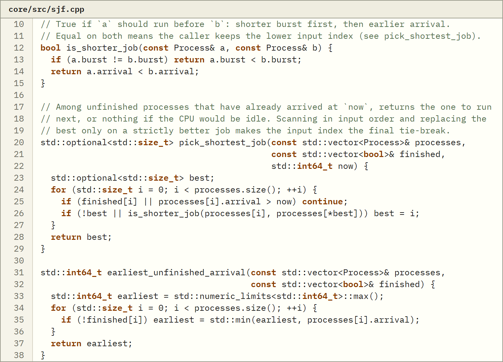
core/src/sjf.cpp, lines 10 to 38: is_shorter_job, pick_shortest_job and earliest_unfinished_arrival.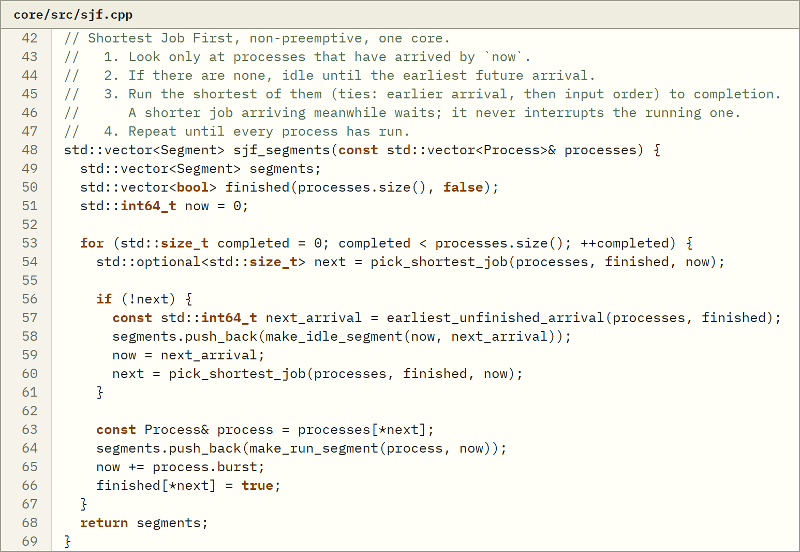
core/src/sjf.cpp, lines 42 to 69: sjf_segments, the SJF algorithm.Walk-through with T2, which shows non-preemption. T2 is P1 (arrival 0, burst 8), P2 (arrival 1, burst 4) and P3 (arrival 2, burst 2).
| Pass | now | Arrived and unfinished | Chosen | Segment recorded | now after |
|---|---|---|---|---|---|
| 1 | 0 | P1 | P1 | P1 [0, 8) | 8 |
| 2 | 8 | P2 (burst 4), P3 (burst 2) | P3, the shorter | P3 [8, 10) | 10 |
| 3 | 10 | P2 | P2 | P2 [10, 14) | 14 |
P2 arrives at tick 1 and P3 at tick 2, both while P1 is running. P3's burst of 2 is shorter than the 6 ticks P1 still needs, but P1 keeps the CPU until tick 8. Only then does SJF compare P2 and P3. Waiting times are 0 (P1), 9 (P2) and 6 (P3): the average waiting time is 15 / 3 = 5.00 ticks and the average turnaround time is 29 / 3 = 9.67 ticks. The application output is in . For comparison, FCFS on the same workload gives 5.67 and 10.33 ().
Every number in the results table is derived from the segments an algorithm produced, using these formulas for each process:
For n processes: average waiting = (sum of waiting) / n, average turnaround = (sum of turnaround) / n, and makespan = the largest completion time. record_start_and_completion copies each run segment's begin and end into the matching process, and derive_waiting_turnaround_response applies the three formulas (). compute_schedule_metrics sums them and returns the averages and the makespan ().
The averages are not computed with a plain floating-point sum. compute_schedule_metrics adds up integer quotients and remainders of each value divided by n, and average (same file, lines 49 to 64) converts once at the end. This avoids overflow of the total and rounding drift for very large times. For the small workloads in this report the result is the ordinary quotient. The app shows two decimals and schedlab-cli shows four.
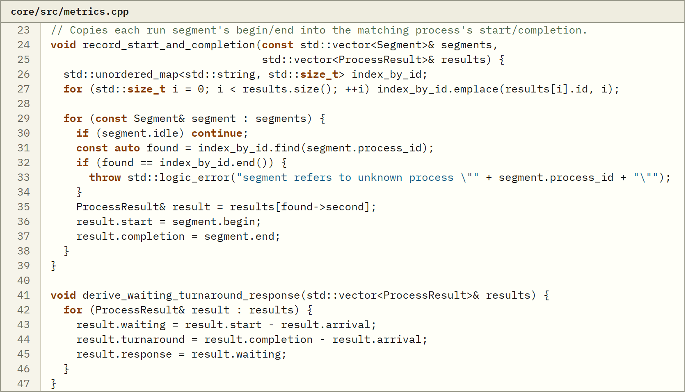
core/src/metrics.cpp, lines 23 to 47: record_start_and_completion and derive_waiting_turnaround_response (the three formulas).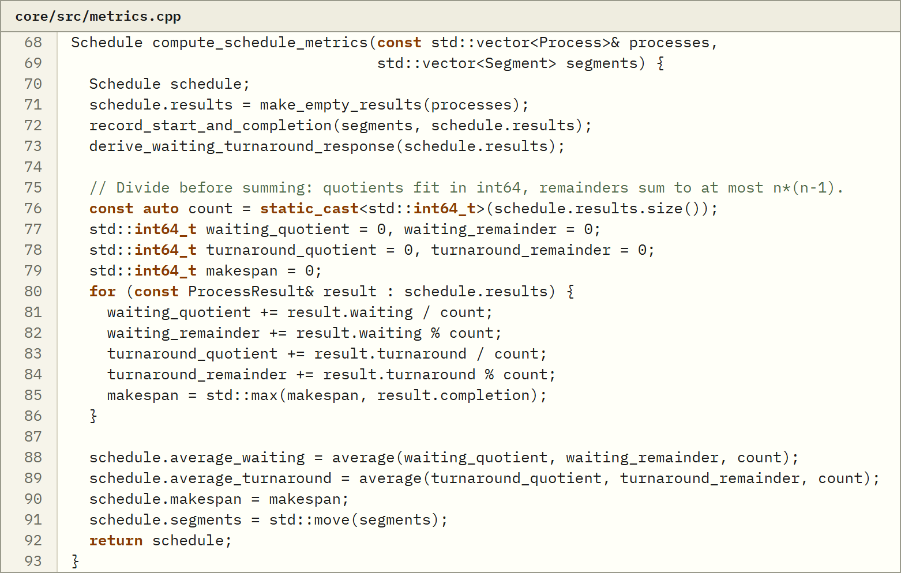
core/src/metrics.cpp, lines 68 to 93: compute_schedule_metrics returns results, averages and makespan.Worked example: T2 under SJF. The schedule from the walk-through is P1 [0, 8), P3 [8, 10), P2 [10, 14).
Average waiting = 15 / 3 = 5.00 ticks. Average turnaround = 29 / 3 = 9.67 ticks (9.6667 in the console output). Makespan = 14 ticks, the completion time of P2.
The figures below are screenshots of the running application (the production build, Chromium, light theme), captured by the report's build script. Each figure shows the Gantt chart with its caption, then the results table and the averages, as two crops of the same page (the text list that repeats the chart is left out). The captions printed inside the screenshots (Figure 1, Table 1) are the app's own numbering, not this report's. Where a workload is not obvious from the chart, its table is shown first. gathers the averages.
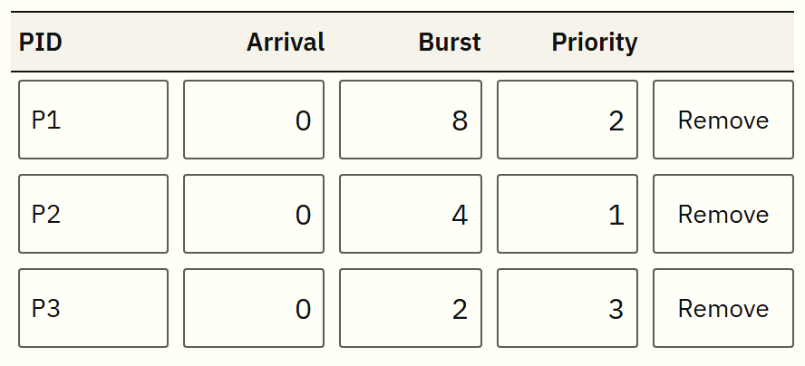
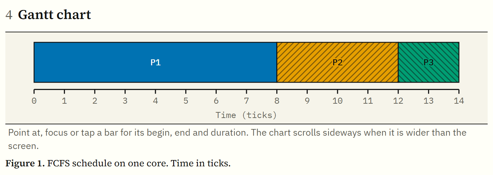
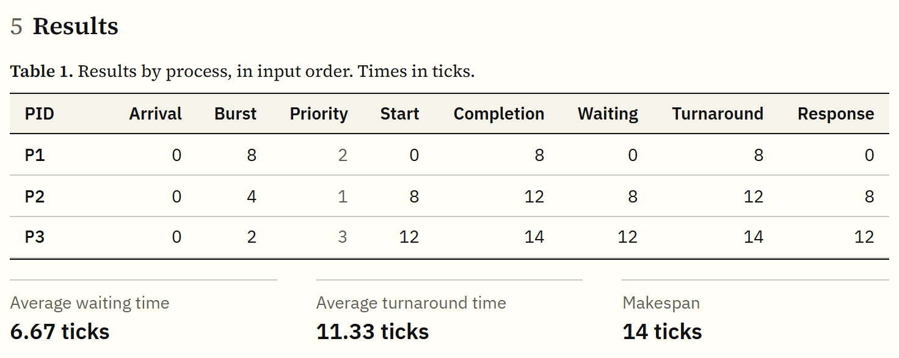
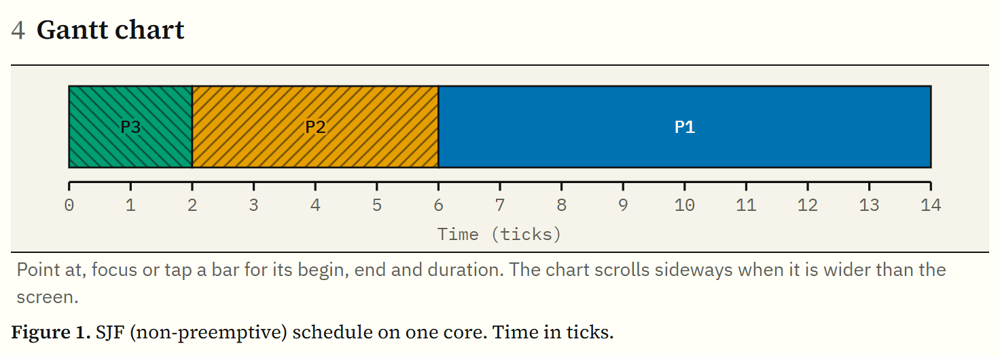
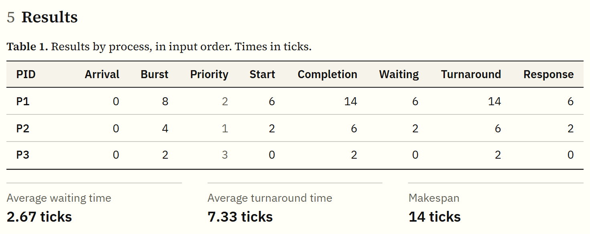
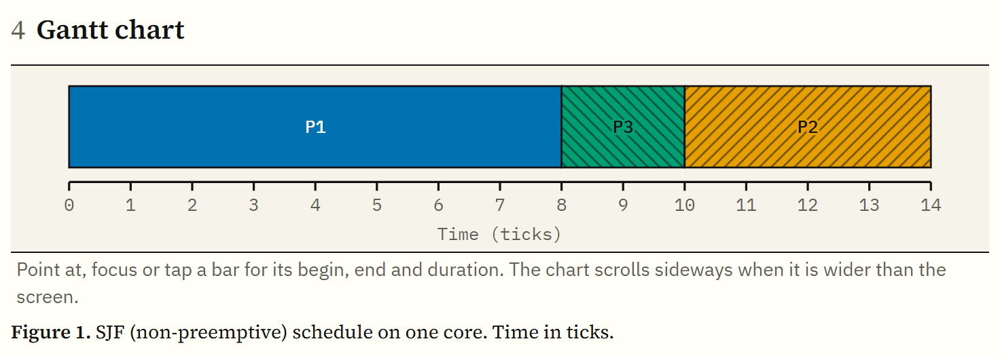
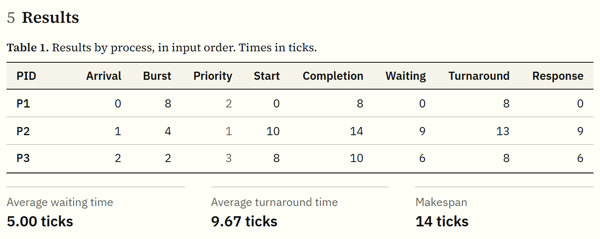
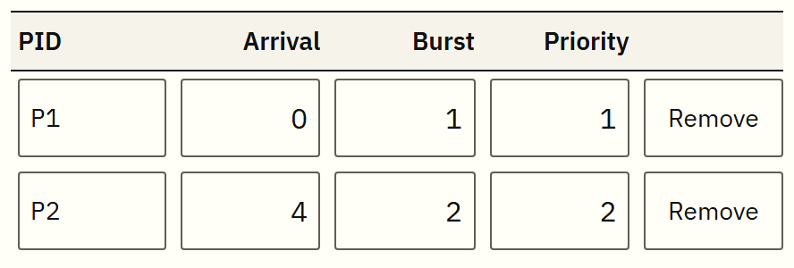
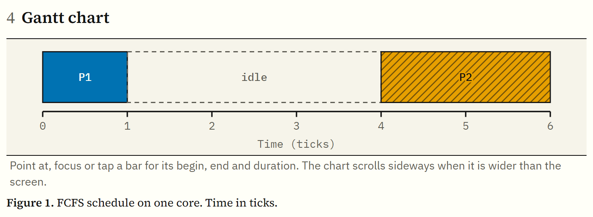
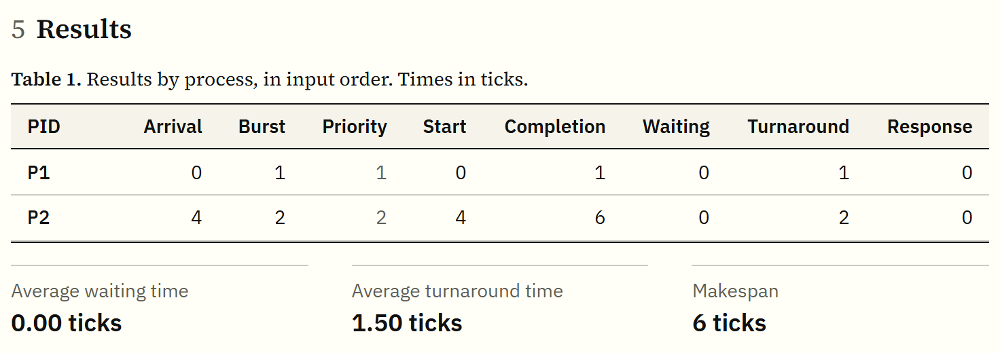
schedlab-cli reads one process per line (id arrival burst priority; blank lines and lines starting with # are ignored) and prints segments, per-process results, averages with four decimals and the makespan. is the output of the real executable for T2 under SJF. It matches the fixture core/tests/cli/t2_sjf.expected, and the values match .
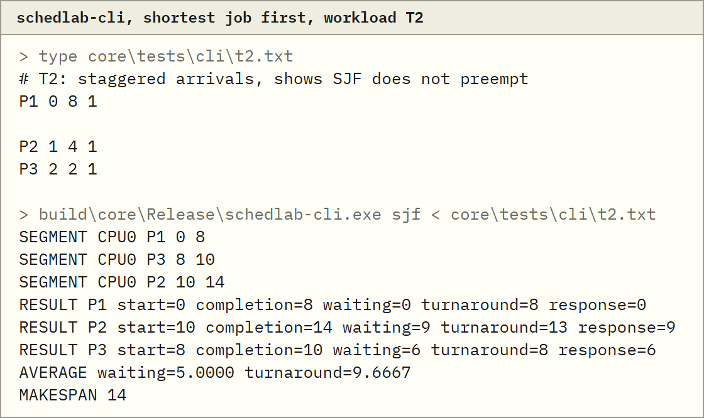
build\core\Release\schedlab-cli.exe with the input file shown above the output.| Workload | Algorithm | Run order | Average waiting | Average turnaround | Makespan |
|---|---|---|---|---|---|
| T1: P1 (0, 8), P2 (0, 4), P3 (0, 2) | FCFS | P1, P2, P3 | 6.67 | 11.33 | 14 |
| SJF | P3, P2, P1 | 2.67 | 7.33 | 14 | |
| T2: P1 (0, 8), P2 (1, 4), P3 (2, 2) | FCFS | P1, P2, P3 | 5.67 | 10.33 | 14 |
| SJF | P1, P3, P2 | 5.00 | 9.67 | 14 | |
| Idle case: P1 (0, 1), P2 (4, 2) | FCFS and SJF | P1, idle, P2 | 0.00 | 1.50 | 6 |
The suites below were run for this report on 14 November 2026, on Windows 11 with PowerShell, Node 22.22.3 and Playwright 1.65.0 (Chromium). The counts are what the tools printed in that run.
| Suite | Command | Result |
|---|---|---|
| Core, native C++ | ctest --test-dir build/core --output-on-failure -C Release | 15 of 15 passed |
| Windows tool, native C++ (optional extra) | ctest --test-dir build/intel --output-on-failure -C Release | 9 of 9 passed |
| Web unit and native/WebAssembly parity tests | npm test in web/ | 772 tests passed, 17 test files |
| TypeScript type check | npm run typecheck in web/ | exit code 0, no errors |
| Browser end-to-end tests | npm run test:e2e in web/ | 22 passed (Chromium) |
What the tests cover. The core suites assert the exact segments, per-process metrics and averages for T1 and T2 under both algorithms, an idle gap at the start and between jobs, identical processes keeping input order, a single job, unsorted input, priority having no effect on the order, and tie-breaking by burst, then arrival, then input order. They also check every validation rule and its message, metric invariants on generated workloads (completion at least start at least arrival, waiting not negative, no overlapping segments, every process exactly once) and averages near the 64-bit limits. Seven schedlab-cli cases compare the console output against stored expected files, including malformed and invalid input. The parity test compares native and WebAssembly output text. The browser tests run T1 and T2 under both algorithms at 375 and 1280 pixel widths in both themes, and check malformed input, undo, keyboard use, offline loading (all external requests blocked), 100 processes with a makespan of 100,000,000 ticks, the optional simulation and the native-trace import.
Not verified. Firefox and Safari were not tested, only Chromium. Physical touch devices and screen-reader speech output were not tested. The optional axe-core accessibility audit was not run, so the accessibility checks do not establish full conformance. The WebAssembly module was not rebuilt for this report; the committed module is the one exercised by the parity and browser tests. For the optional Windows tool, console Ctrl+C delivery was not driven by hand (the worker cancellation itself is tested), failures of every Win32 call were not injected, and the single-class branch was only tested with a fake topology because the test machine has two classes. The measurements are described in Section 8 with their limits. Nothing was deployed.
These two extras are optional and educational. They are not part of the graded FCFS and SJF simulator, which stays the default. Neither one changes how FCFS or SJF work.
Below the graded simulator, a Topology control switches from one core to an Intel-style layout (6 P-cores and 4 E-cores, ten lanes) or an Arm-style layout (1 Prime, 3 Big and 4 LITTLE cores, eight lanes). The queue policy (FCFS or SJF) chooses which ready process goes next, and a separate placement heuristic chooses an idle lane. In this mode burst is read as work units, and a process runs for ceil(work / lane rate) ticks. The results carry the labels SIMULATED and Experimental / simplified model.
For T1 under FCFS, the default placement (first available lane by ID order, which puts E before P) gives an energy index of 14 and a makespan of 8 ticks. Placing on the fastest available lane gives the layout in : P1, P2 and P3 run on three P-core lanes, the makespan is 4 ticks and the energy index is 21. Faster lanes finish sooner and cost more of the assumed energy units. The values are only as meaningful as the invented rates.
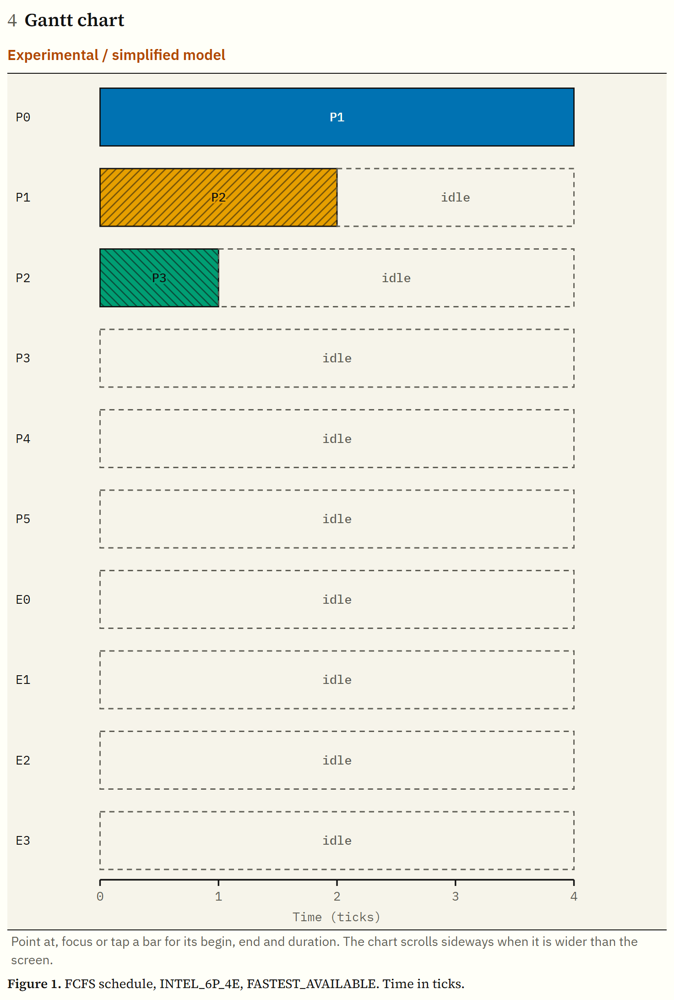
The separate program native/windows-intel (schedlab-intel.exe) is a Windows-only C++ tool. It lists the processor classes Windows reports, and on request runs one bounded compute workload on a single worker thread while asking Windows to confine that thread to the highest or lowest efficiency class (CPU Sets). It writes a JSON file. The web app imports such a file locally, with no upload, and shows it in a separate Native measured panel in milliseconds. These are real measurements, not FCFS or SJF results, and they are never drawn on the tick axis.
The committed sample traces were collected on 14 November 2026 on a 12th Gen Intel Core i7-12650H, active power plan Balanced, with one warm-up run and three measured runs of 400,000,000 integer iterations. Every run produced the checksum 51001733377.
| Requested class | Run 1 | Run 2 | Run 3 | Median | Min to max | Samples seen in requested class (per run, of 382) |
|---|---|---|---|---|---|---|
| performance | 678.4595 | 668.6926 | 689.6459 | 678.4595 | 668.6926 to 689.6459 | 382, 382, 382 |
| efficient | 838.2289 | 795.0416 | 828.3228 | 828.3228 | 795.0416 to 838.2289 | 365, 310, 365 |
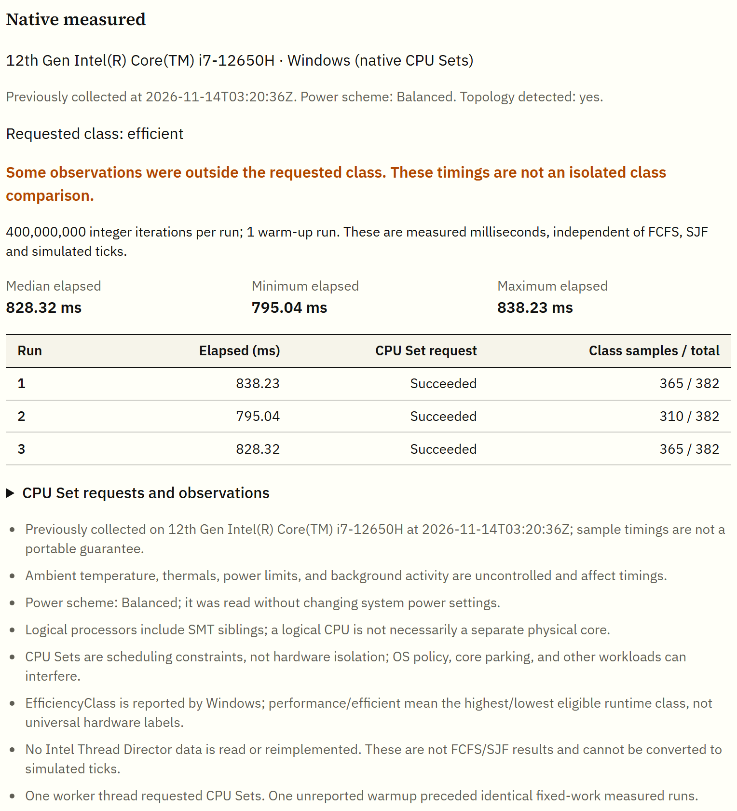
The app rounds to two decimals: it shows medians of 678.46 ms (performance request) and 828.32 ms (efficient request).
Caveats. The efficient-class request was observed in the requested class in only 365, 310 and 365 of 382 samples per run, so those timings include time on other classes. The two medians are therefore not an isolated P-core to E-core speed ratio, and the report makes no such claim. Other limits:
1. Among the scheduling algorithms you implemented (FCFS, SJF), which one performed the best in terms of average waiting time and turnaround time? Explain why.
SJF was better on both measures in both test cases. In T1 all three processes arrive at tick 0, and only the order differs. FCFS runs P1, P2, P3 and gives an average waiting time of 6.67 ticks and an average turnaround of 11.33 ticks. SJF runs P3, P2, P1 and gives 2.67 and 7.33.
The reason is simple arithmetic. A process waits for every job placed before it, so the burst of the first job is counted as waiting by everyone behind it. FCFS puts the 8-tick P1 first, and both P2 and P3 pay for it (waiting 8 and 12). SJF puts it last, so no one waits for it, and the small bursts are the only ones counted repeatedly. The total work is the same: both finish at tick 14.
In T2 the gain is smaller, 5.67 against 5.00 waiting and 10.33 against 9.67 turnaround, because P1 was the only process at tick 0 and could not be interrupted. SJF is also not better for everyone: P2 waits 9 ticks under SJF and 7 under FCFS. Our simulator is told every burst in advance. A real operating system usually is not.
2. How does the arrival time of processes affect the fairness and efficiency of each scheduling algorithm? Provide an example based on your test cases.
Arrival time decides which processes are ready when the CPU becomes free, so it shapes both algorithms. FCFS looks only at arrival, so nobody is overtaken, but a late short job still pays for early long ones. In T2, P3 arrives at tick 2 with a burst of 2 and waits 10 ticks behind P1 and P2, the longest wait under FCFS.
SJF depends on arrival more. At tick 0 only P1 was ready, so SJF had no choice, and because it is non-preemptive P1 kept the CPU until tick 8 although P3 arrived at tick 2. At tick 8 it compared P2 and P3 and picked P3. P3's wait fell from 10 to 6 while P2's rose from 7 to 9. The SJF advantage in average waiting time shrank from 4.00 ticks in T1 (6.67 to 2.67) to 0.67 in T2 (5.67 to 5.00).
Arrival also decides whether the CPU idles. With P1 (0, 1) and P2 (4, 2) the CPU is idle during [1, 4) under both algorithms, because nothing has arrived. The makespan is 6 ticks with 3 busy ticks, and both give average waiting 0.00 and turnaround 1.50. When no choice exists, the policies are the same, and CPU use is set by the arrivals, not the algorithm.
3. Which algorithm was the most challenging to implement and why? What concept or logic made it difficult?
SJF was harder than FCFS. FCFS is one stable sort by arrival followed by a single pass with a clock. SJF cannot be a sort, because the set of eligible processes changes as the clock moves. The code has to pick, run, advance the clock and pick again, and several details have to be right together.
First, the idle jump. When nothing has arrived, the clock must move to the earliest unfinished arrival and an idle segment must be recorded, otherwise the loop has nothing to choose. Second, tie-breaking: equal bursts go to the earlier arrival, then to the process listed first. We get the last rule by scanning in input order and replacing the best choice only when a process is strictly better. Third, non-preemption. The scheduler must not look again when a shorter process arrives mid-run, and T2 exists to pin that behavior down.
The hardest engineering part overall was not an algorithm, though. It was keeping the native build and the WebAssembly build identical. JavaScript numbers are doubles, so the binding limits integers to the safe range, and the average is computed from integer quotients and remainders to keep it exact. A parity test compares both outputs as text, so a drift in either build fails a test.
4. If you were to improve your simulator, what additional features or enhancements would you add to make it more useful or realistic for OS learning?
The first addition would be the algorithms the assignment leaves out: preemptive shortest remaining time first, round robin with a chosen time quantum, and priority scheduling that finally uses the priority field, which is now recorded but ignored. T2 shows why. SJF cannot let P3 run at tick 2, and a preemptive variant could. Putting both on one chart would let a student see what preemption buys and what it costs.
Second, a step-by-step playback and a side-by-side comparison panel. Today a student switches algorithms and compares two screens by eye, as in the table in Section 6. A synchronized view would make convoy effects and ordering differences visible at a glance.
Third, more realism. Processes could alternate CPU and I/O bursts, and a context-switch cost could be charged, because both change which policy wins. A random workload generator, CSV export of results and extra metrics such as CPU utilization, throughput and the largest single wait would help with larger experiments. Finally, the optional multi-core mode could take its work rates from imported native measurements, once those are taken under cleaner conditions, instead of invented numbers.
5. How does simulating CPU scheduling help you understand real-world operating system behavior? Give at least two insights you gained from this project.
The first insight is the convoy effect. In T1 under FCFS, P3 needs only 2 ticks but waits 12 behind the 8-tick P1 and the 4-tick P2. Changing nothing but the order cut the average waiting time from 6.67 to 2.67 ticks, and the total work and makespan (14 ticks) stayed the same. A scheduler changes how long users wait without making the machine any faster.
The second is that every policy needs information or gives something up. SJF wins on averages but needs the burst time before the job runs, which a real kernel does not know, and T2 shows a late short job waiting behind a long one when the CPU cannot be taken back.
The third came from the native experiment. The textbook models assume identical cores and an ideal CPU. On the Intel laptop, Windows reports processor classes, and a CPU Set request is only a constraint. For the efficient class, the requested class was seen in only 365, 310 and 365 of 382 samples per run, with the Balanced power plan and background load uncontrolled. Real scheduling also involves topology, power policy and competing processes, which the simulator leaves out. That is why the measured milliseconds are kept apart from the simulated ticks.
plan.md, docs/core-contract.md, docs/web-contract.md, docs/hybrid-contract.md, docs/hardware-assumptions.md and docs/extension-verification.md.